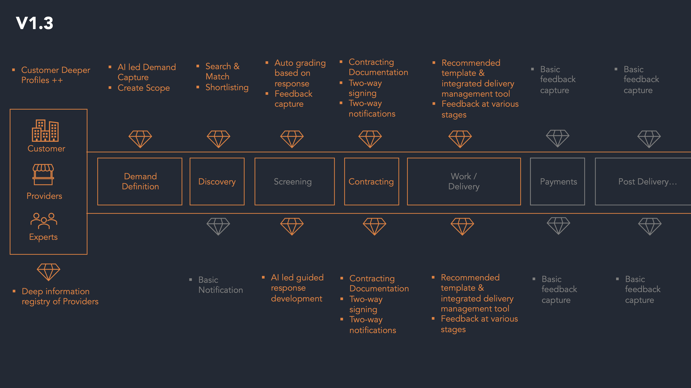
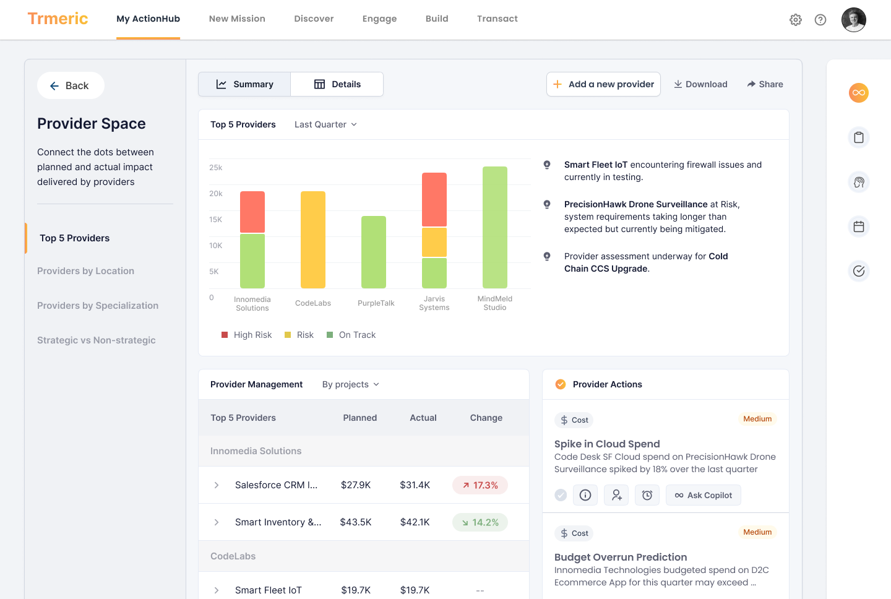
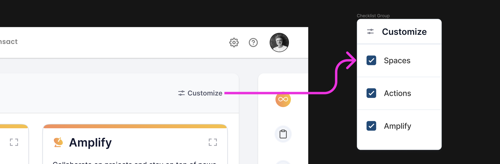
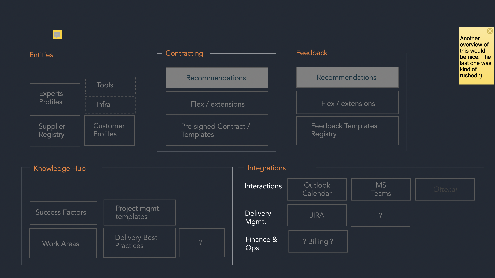
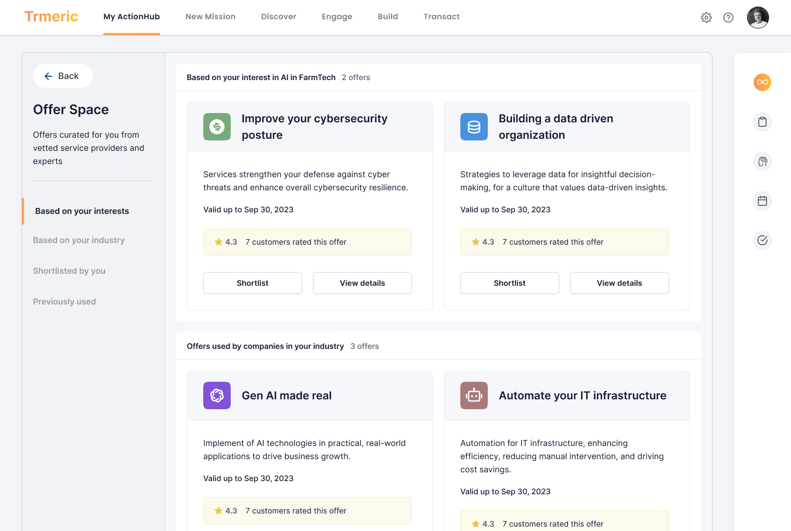
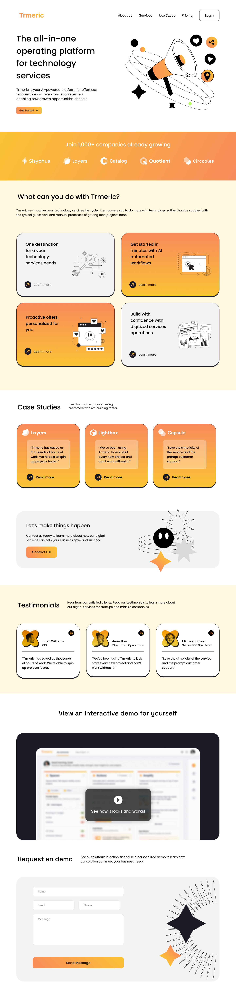

Trmeric was trying to help companies define technology work, find the right providers, track delivery, and manage transactions in one place. I was brought in to turn that broad idea into clearer flows, stronger UX structure, and a prototype direction the team could build from.
The work centered on three things: help buyers define what they needed before they chose a provider, make the product easier to navigate across discovery and execution, and create a clearer operating layer for tracking providers, offers, and transactions.
This was not just screen polish. The product needed stronger workflow logic, a usable project brief, clearer status handling, and a home for the work once a customer moved beyond the first conversation.
Trmeric was trying to cover a lot of ground: help a company clarify its needs, generate a project brief, discover providers, manage offers, oversee delivery, and handle transactions. The opportunity was strong, but so was the risk. Without a clear structure, the product could easily become a stack of features instead of a usable operating system for the work.
The journey map, user stories, and working-session recordings all pointed at the same problem. Buyers often did not know the right way to kick off the work, providers were not always aligned with the actual need, and both sides were left filling in gaps the product should have helped close.
Better structured discovery. Users needed help turning a broad problem into a usable project brief and clearer provider criteria.
A stronger working surface. Once discovery was done, customers needed a clearer place to manage providers, offers, projects, and transactions.
The guesswork was on both sides. Customers were often unsure how to frame the work, and providers were often selling into incomplete requirements.
The platform had to do more than matchmake. It also had to support progress, status, collaboration, and decision-making after the first conversation.
The initial scope was organized as a four-sprint prototype plan. Week one covered Discover and Engage. Week two moved into Build and Retro. Week three focused on Transact and Action Hub. Week four pulled all six modules plus the home screen into one higher-fidelity prototype. Later retainer work extended into provider pages, second-level home-page definition, feature improvements from the working inventory, and a more reusable style and component system.
The recordings and journey map make the same point in different ways. Buyers did not always know how to define the work, how to evaluate providers, or how to tell whether a proposal really fit the problem. The product had to reduce that uncertainty with structure, context, and clearer prompts.



Users were being asked to choose providers before the work was well defined, which made both search and evaluation weaker.
A structured discovery flow with contextual prompts, progress cues, upload support, and a generated project brief users could review, edit, and share.
That shifted the product from “search for vendors” toward “help me define the work well enough to choose the right provider.”
Matching users with providers was only part of the job. The product also needed a place to manage what happened after that decision.
Provider Space and Action Hub concepts that made room for summaries, project status, provider health, actions, and follow-on decisions.
Without that layer, the platform would feel useful in the first conversation and thin everywhere after.
Transactions had different states, project types, and approval paths that could get confusing quickly if they were collapsed into a flat table.
A structure that showed workflow status, line-item detail, action buttons, dashboards, and different summary logic for time-and-materials versus fixed-price work.
The payment layer needed to support trust and oversight, not just record that an invoice existed.


I do not have a clean business KPI to claim here, and I do not want to fake one. What the project materials do support is a stronger product structure: a better defined discovery flow, a clearer provider-management layer, more explicit transact logic, and a more reusable interface foundation for what came next.
This project is strongest as an example of product strategy inside an emerging B2B platform. The job was to turn a promising but broad concept into a clearer product path with better framing, stronger module logic, and more useful screens.
Project proposal, retainer agreement, user-story sheets, transact workflow formats, role-based journey map, preserved screens, landing-page concepts, and the full Trmeric recording synthesis.
